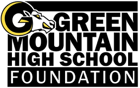
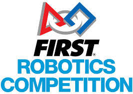
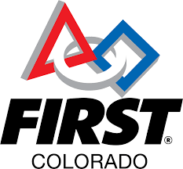

Green Mountain High School Foundation

FRC

FRC Colorado

Comcast Network
Rambotics is a dynamic FRC (FIRST Robotics Competition) Team Embracing students from diverse backgrounds. Rambotics fosters a collaborative environment where members develop technical skills and tackle real-world challenges through robot design, programming, and community outreach. With a commitment to excellence both on and off the competition field, Rambotics inspires the next generation of STEM leaders while forging lasting friendships and making a positive impact in their community.
Rambotics earned the Rookie Inspiration Award thanks to the transformative experience provided by the FIRST Robotics Competition (FRC). In our debut season, we embraced challenges with enthusiasm, leveraging our passion for robotics to engage our community through outreach and collaboration. By embodying FRC's values of inclusivity and innovation, we left a lasting impression on judges and peers, demonstrating the profound impact of FRC on individuals and communities. Winning this award validates our team's dedication and highlights the potential for FRC to inspire and empower others.